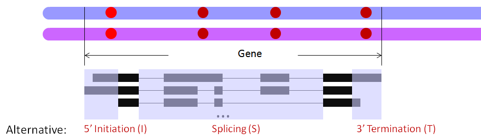

snpParser.pl -- All the sub-routines for SNV (sometimes denoted interchangeably as SNP) handling in the ASARP pipeline.
use Statistics::R; #interact with R require "fileParser.pl"; #sub's for input annotation files require "snpParser.pl"; #sub's for snps ...
... get all configs, input files (see fileParser)
# read and parse SNVs my $snpRef = initSnp($snpF, $POWCUTOFF); # match SNVs with gene transcript annotations my $geneSnpRef = setGeneSnps($snpRef, $transRef); # match gene SNVs with AI/AT and alternative splicing (AS) events my ($snpEventsRef) = setSnpEvents($geneSnpRef, $altRef, $splicingRef); # calculate NEV and filter the matched gene SNVs with AI/AT/AS events my ($snpsNevRef) = filterSnpEventsWithNev($snpRef, $geneSnpRef, $snpEventsRef, $bedF, $allEventsListRef, $NEVCUTOFFLOWER, $NEVCUTOFFUPPER); # process ASE and ASARP my ($allAsarpsRef) = processASEWithNev($snpRef, $geneSnpRef, $snpsNevRef, $SNVPCUTOFF, $ASARPPCUTOFF, $ALRATIOCUTOFF); # format results to output my $outputGene = $outputFile.'.gene.prediction'; outputRawASARP($allAsarpsRef, 'ASARPgene', $outputGene); my $allNarOutput = formatOutputVerNAR($allAsarpsRef);
Statistics::R: has to be installed. See search.cpan.org
This perl file contains all the sub-routines for SNV handling and ASARP processing, as well as result formatting. They are quite procedural and one should first get the input files such as annotations and events using the sub-routines in fileParser.
Basically there are 3 steps:
1. read and parse the individual SNVs
2. match the SNVs to transcripts, and then events, and then filter them based on the PSI like Normalized Expression Value (NEV) calculation
3. process the SNVs with ASE patterns and SNV pairs with other ASARP patterns: AI/AT/AS, and output the formatted results
AI/AT/AS categories are briefly illustrated below (where the red dots represent SNVs with ASARP patterns):

The SNV list input file contains the list of all SNVs covered by RNA-Seq in the genes of interest, with the read counts of the reference (Ref) and alternative (Alt) alleles.
This file is space delimited with the following fields for each SNV:
chromosome coordinate alleles (reference allele>alternative allele) dbsnpID RNA-Seq counts (# reads for reference allele:alternative allele:wrong nucleotide)
Example file: ../data/snp.list.fig3
input: ($snpF, $POWCUTOFF) --SNV file path, powerful SNV cutoff output $snpRef --reference to SNVs, categorized into powerful/non-powerful internally p-value cutoff (Chi-Squared)
setGeneSnpsmatch SNVs with gene transcript annotations
input: ($snpRef, $transRef); --reference to SNVs, reference to gene transcripts output: $geneSnpRef --reference to SNVs matching gene transcripts
setSnpEventsmatch gene SNVs with AI/AT and alternative splicing (AS) events
input: ($geneSnpRef, $altRef, $splicingRef) --reference to gene SNVs ($geneSnpRef), --reference to AI/AT events ($altRef) --reference to AS events ($splicingRef) output: ($snpEventsRef) --gene SNVs matching AI/AT/AS events
filterSnpEventsWithNevcalculate NEV and filter the matched gene SNVs with AI/AT/AS events
input: ($snpRef, $geneSnpRef, $snpEventsRef, $bedF, $allEventsListRef, $NEVCUTOFFLOWER, $NEVCUTOFFUPPER) --reference to SNVs ($snpRef), --reference to gene SNVs ($geneSnpRef), --reference to SNVs matching AI/AT/AS events ($snpEventsRef), --reference to bed folder for mapped reads ($bedF), --reference to all parsed events ($allEvetnsListRef), --lower and upper cutoffs (excl.) for NEV ($NEVCUTOFFLOWER/UPPER) output: ($snpsNevRef) --gene SNVs matching NEV and AI/AT/AS events
processASEWithNevprocess ASE and ASARP
intput: ($snpRef, $geneSnpRef, $snpsNevRef, $SNVPCUTOFF, $ASARPPCUTOFF, $ALRATIOCUTOFF) --see above for $snpRef, $geneSnpRef, $snpsNevRef --Chi-Squared Test p-value cutoff on individual SNVs for ASE ($SNVPCUTOFF) --Fisher's Exact Test p-value cutoff on target-control SNV pairs for ASARP ($ASARPPCUTOFF) --allelic ratio difference cutoff for target-control SNV pairs for ASARP ($ALRATIOCUTOFF) output: ($allAsarpsRef) --reference to all ASE and ASARP results
outputRawASARPformat results to output
input: ($allAsarpsRef, $key, $outputFile) --reference to ASARP results ($allAsarpsRef) --result type to output ($key) with choices: 'ASEgene'--ASE results arranged by genes, 'ASARPgene'--ASARP results arranged by genes 'ASARPsnp' --ASARP results arranged by SNVs --the output file for the results ($outputFile) output: corresponding ASE/ASARP results written to $outputGene
formatOutputVerNARformat results to be like the old version for NAR
input: $allAsarpsRef --see above output: ($allNarOutput) --text formatted according to the old version
asarp, fileParser, MyConstants
This pipeline is free software; you can redistribute it and/or modify it given that the related works and authors are cited and acknowledged.
This program is distributed in the hope that it will be useful, but without any warranty; without even the implied warranty of merchantability or fitness for a particular purpose.
Cyrus Tak-Ming CHAN
Xiao Lab, Department of Integrative Biology & Physiology, UCLA